治水兴邦
河海人
Established 1915 · Nanjing & Changzhou
以水利为特色、工科为主、多学科协调发展——从张謇创办的河海工程专门学校，到今天的一校三区，一百一十年，一条奔涌的河。
十二页河海，顺流而下
如果你第一次听说河海，不必从厚重的校史读起。这本特刊把「河海是谁」拆成十二个栏目：点顶部按钮或下方目录，直接翻到你想看的那一页——封面与页间的流动水面，是这本刊的底色。
编者按
河海大学是一所以水利为特色的学校，但它并不只属于水利。这本特刊想做的事很简单：不给结论，只给线索——把学校的历史、学科、校区和精神，铺成一条可以自己走下去的河。
治水兴邦，
百年河海
教育部直属全国重点大学，「双一流」「211 工程」「985 工程优势学科创新平台」建设高校，设有研究生院。它的名字里有两条河，也有一个国家的治水史。
一九一五年，近代爱国实业家、教育家张謇在南京创办河海工程专门学校——这是中国第一所培养水利人才的高等学府，开创了中国水利高等教育的先河。校名取「河」与「海」，既是办学方向，也是使命所在：治水，兴邦。
此后的一百一十年，学校在治水兴邦的奋斗历程中发展壮大。1960 年被认定为全国重点高校；1985 年复名「河海大学」，校名由邓小平同志亲笔题写；1996 年入选「211 工程」；2008 年实施「优势学科创新平台」建设；2017 年入选国家「双一流」建设高校。
今天的河海，是一所以水利为特色、工科为主、多学科协调发展的大学，在南京、常州两地办学，形成一校三区的格局，被誉为「水利高层次创新创业人才培养的摇篮」。
对不熟悉它的人来说，最快的理解方式是看它做的事：大江大河的治理、水资源的调配、水环境的修复、港口海岸的建设、数字孪生流域的探索——这些都写在这所学校的学科与校友名录里。
一人兴水利，百年河海由此始
1915 年，张謇在南京创办河海工程专门学校，开出中国水利高等教育之先河。2026 年，正值张謇先生逝世一百周年——这一栏，写给那个把钱与心力投向江海的人。
南通之子
江苏南通人，清末状元，授翰林院修撰；近代著名实业家、教育家，一生创办企业二十余家、学校三百七十余所。
实业救国
创办大生纱厂等实业，主张「以实业养教育」，把赚来的钱又一次次投回教育与水利。
治水导淮
1914 年兼任全国水利局总裁，力主治水导淮。他深知：治水之难，难在无人才。
储才为急
「大工将施，储才为急」——1915 年创办河海工程专门学校，中国第一所培养水利人才的高等学府。
生于江苏南通
后来成为清末状元、近代实业家与教育家。
恩科会试状元
授翰林院修撰，步入时代舞台。
兼任全国水利局总裁
力主治水导淮，深感水利人才之匮乏。
河海工程专门学校
中国第一所培养水利人才的高等学府，河海大学由此发端。
八月二十四日病逝
农历七月十七，享年七十三岁。
逝世一百周年
先生已去百年，河海仍在奔流。
以上生平信息整理自河海大学官网与张謇相关公开资料；如有出入，以官方发布为准。
10百十年，一条奔涌的河
从 1915 到 2025，河海的每一步都与中国水利事业同频共振。自左向右拖动年表，顺流而下。
河海工程专门学校
由近代爱国实业家、教育家张謇创办，中国第一所培养水利人才的高等学府，开创中国水利高等教育先河。
全国重点高校
被中共中央认定为全国重点高校，办学地位进一步确立。
复名「河海大学」
改革开放春风中复名，校名由邓小平同志亲笔题写。
入选「211 工程」
被确定为国家「211 工程」重点建设高校。
优势学科创新平台
经教育部批准实施「优势学科创新平台」建设。
入选国家「双一流」
入选国家「双一流」建设高校，迈向新的发展阶段。
百十校庆
建校 110 周年，桃李芬芳满天下，治水兴邦续新篇。
走到一片海的辽阔。 Flowing water · 水脉
一卷胶片，三代河海人
把人物放进一卷电影胶片，按序滚动——从创办河海的先贤，到两院院士团队，再到扎根江河一线的水利泰斗与治水校友。以下人物照片与事迹均取自河海大学官网公开资料。
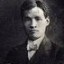
1882—1938 · 教务主任、教授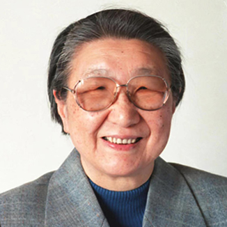
1923—2022 · 华东水利学院首任院长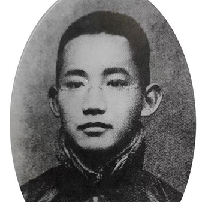
1897—1989 · 中国科学院院士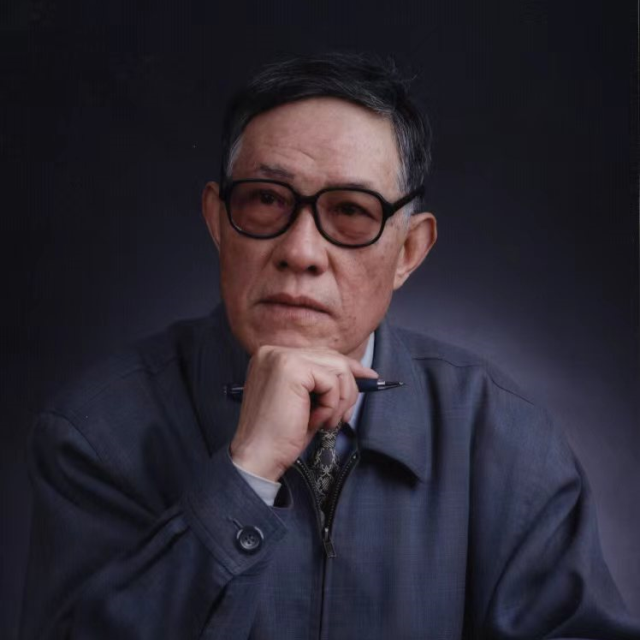
1939—2023 · 中国工程院院士点两侧的人像或左右箭头翻动胶片 · 悬停暂停自动播放 · 共 13 位（资料源自河海大学官网）
86四句话，一条河的精神
艰苦朴素、实事求是、严格要求、勇于探索——这是河海在创业与奋斗历程中沉淀下来的精神写照，也是这所学校最想留给学生的东西。
艰苦朴素
从 1915 年创办之日起，河海便与江河湖海同甘共苦。老一辈水利人常年奔波在堤坝、工地与观测站之间，把办公室搬到一线；这种作风延续至今——崇尚简朴、拒绝浮华，把精力投向工程现场与实际问题。对河海人来说，艰苦朴素不是节俭口号，而是长期与水打交道养成的职业气质。
实事求是
水利容不得半点虚言。一条大坝、一座泵站、一次调度方案，都要经得起水文数据、模型演算和工程实践的反复检验。河海人强调从实际出发：野外踏勘、原型观测、试验验证，用数据说话，用结果交卷。无论是科研还是工程，「是多少就是多少」是最低的诚信，也是最高的标准。
严格要求
从学生时代的课程设计到重大工程的施工图审查，河海始终以高标准丈量每一个环节。老一辈教师以「严」著称：计算精度、实验规范、现场管理，样样不将就。这种严格塑造了河海毕业生的口碑——他们进入水利系统后，往往成为最敢较真、最守底线的那一批工程师。
勇于探索
百十年来，河海始终站在水利变革的前沿：从传统水文观测到数字孪生流域，从单一水工结构到水生态、水环境、智慧水利交叉融合。学校鼓励师生在未知水域中试错、迭代、突破，把论文写在江河湖泊上，把技术落到工程第一线。探索精神，让这所百年学府始终面向未来。
后来成了很多人做工程的底线。 Discipline · 校训
数字里的河海，正在发生
把实时数据与近年创新成果放到同一块看板上：数字会随时间流动，成果会向交叉处生长。以下为前端模拟演示数据，非官方统计。
科研动态 · 实时滚动
- 国家重点研发计划「水资源高效利用」项目组发布阶段性成果。
- 数字孪生流域平台新增接入三处水文监测站点。
- 水环境团队完成太湖蓝藻遥感预警模型的一次迭代。
- 港口海岸团队完成近海工程数字孪生仿真的整周期验证。
- 校友参与的跨流域调水工程进入通水调试阶段。
人才数据 · 河海学子在岗分布
以上为演示数据，仅用于展示交互效果。
当水利遇上 AI、生态与海洋
以水为核，向交叉处生长。近年学校在数字孪生、智慧水利、水生态与海洋工程等方向持续产出成果——下列条目为版式示意，用于展示成果列表的呈现方式。
数字孪生流域平台
面向流域防洪与水资源调度，支撑预报、预警、预演、预案的「四预」闭环。
智慧水利大模型
面向水利行业的领域模型，服务知识问答与调度辅助决策等场景。
水环境遥感监测
多源遥感与水质模型耦合，实现河湖水质快速反演与异常预警。
近海工程数字孪生
面向港口与海岸结构的安全监测、仿真推演与风险预警。
河湖水生态修复
面向河湖健康的系统化修复路径与效果评估方法。
水利工程智能建造
施工过程数字化与智能装备协同，提升工程质量与效率。
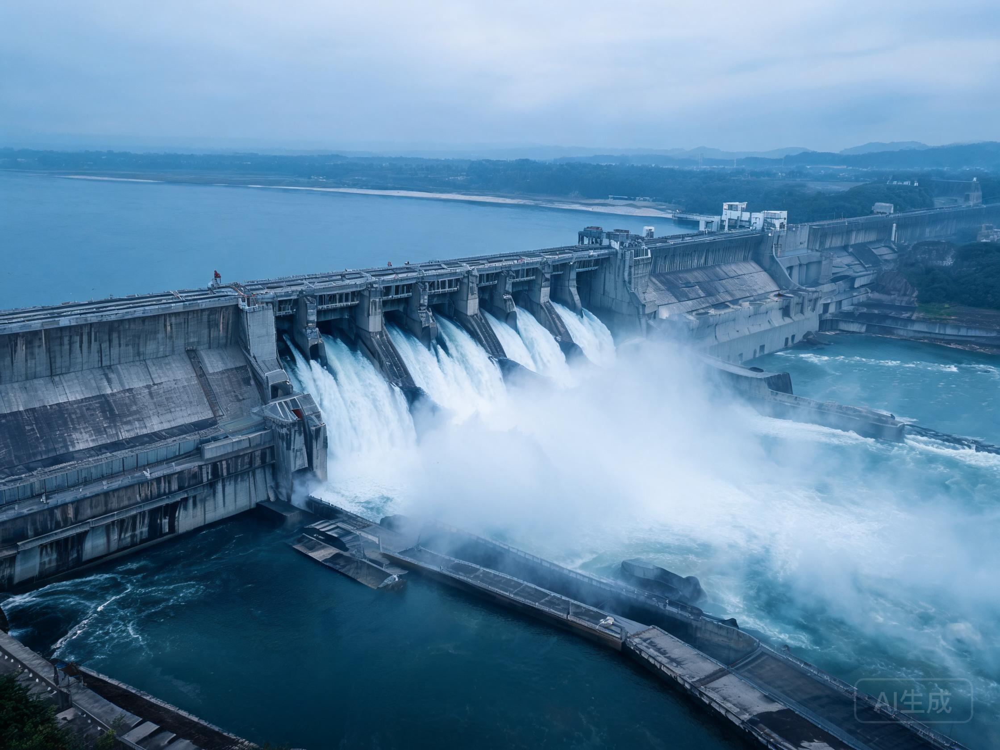
交叉创新正在落地。 Interdisciplinary · 成果落地
一颗蓝色星球，三处河海
拖动地球，找到南京西康路、江宁与常州三处校区光点。点击光点可查看校区实景与简介，也可「进入沉浸 VR」环视校园一角。
地球贴图来自 NASA 蓝色弹珠公开数据，校区位置为示意标注。
值得打卡的几处校园角落
把校园里适合停留与拍照的地方标出来——每一处都配了官网实景照片，并写清「为什么适合打卡」，方便你按图索骥。
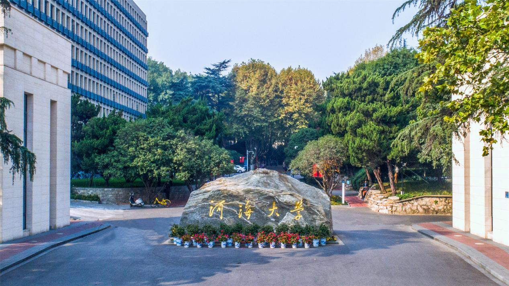
西康路校区主校门
民国风格的校门与校名题字，是到访河海的第一张合影。
为什么适合打卡每届新生的第一张合影、校庆与毕业季的固定机位；门外是南京的烟火气，门内是一条通到底的林荫路。
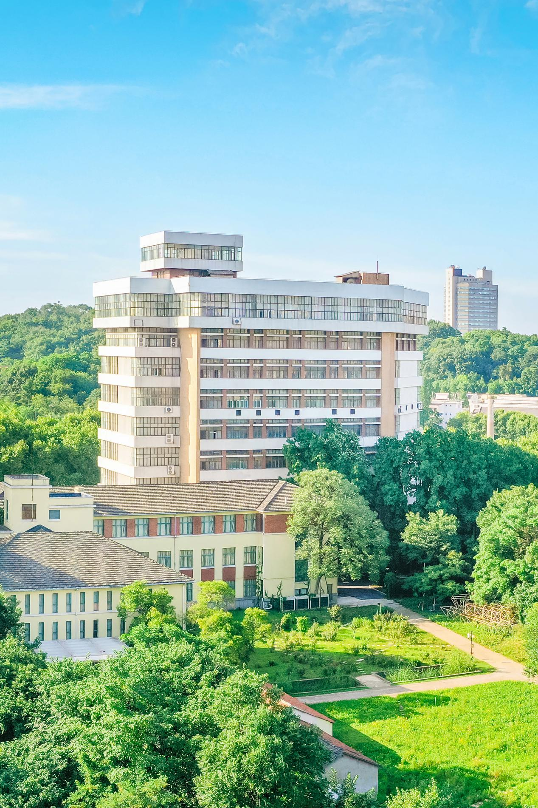
西康路校区老图书馆
红砖老馆配林荫大道，书卷气最浓。
为什么适合打卡靠窗的光影在四季里各有味道，上午的斜光最适合拍书页与窗格，安静而有故事感。
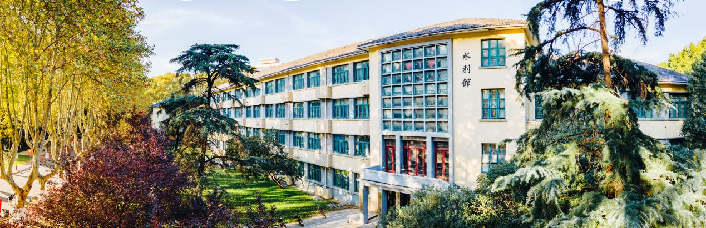
西康路校区水利馆（1956）
由华水自行设计，水利学科的象征。
为什么适合打卡立面尺度感强，适合仰拍；「水利馆」三个字本身就是这所学校最直白的注脚。
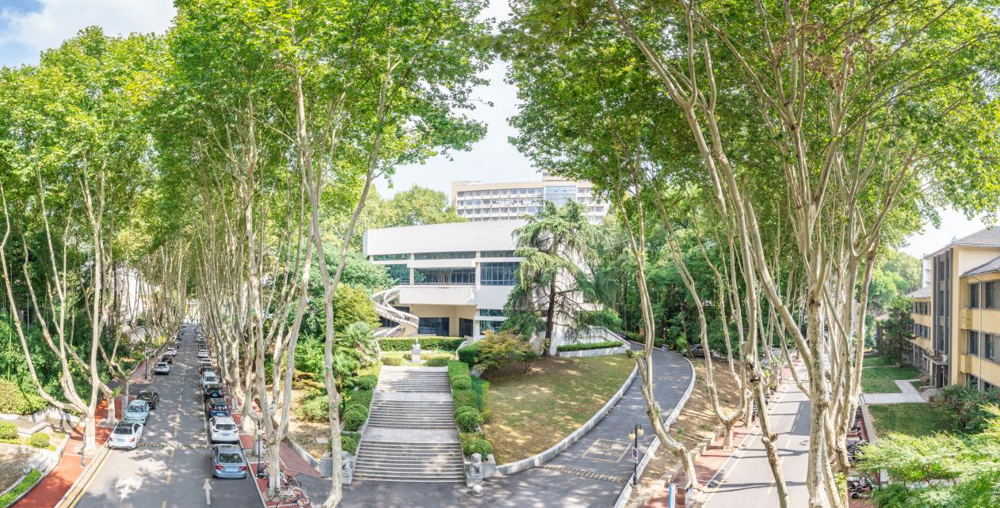
西康路校区林荫大道
两侧法桐成拱，秋日金黄。
为什么适合打卡校园最出片的一条路，航拍与人像都好看；秋天叶子黄透时，几乎不用修图。
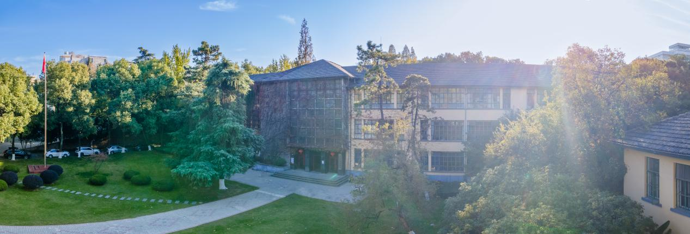
西康路校区工程馆（1953）
华水早期的标志性建筑，由同济大学建筑工程设计处设计。
为什么适合打卡建筑与校史爱好者必拍的一栋；青砖立面在傍晚暖光里最有质感，横竖构图都稳。
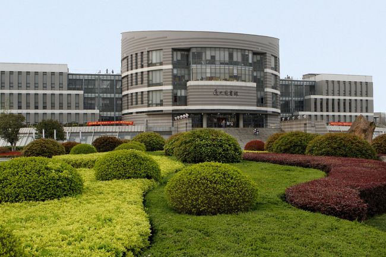
江宁校区逸夫图书馆
中部上挠的弧形曲面顶、侧面呈绿叶形态，江宁校区地标。
为什么适合打卡毕业照的常见背景；正面或斜角拍，弧形屋面能拉出很强的线条感与纵深感。
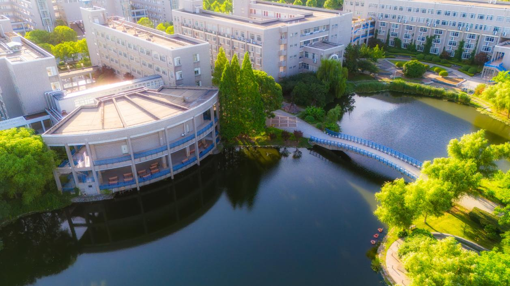
江宁校区东湖
临水而立的湖景，清晨薄雾与傍晚霞光都落在这里。
为什么适合打卡水面倒影是天然的构图；清晨与傍晚各来一次，能拍到完全不同的湖，适合慢门与倒影。
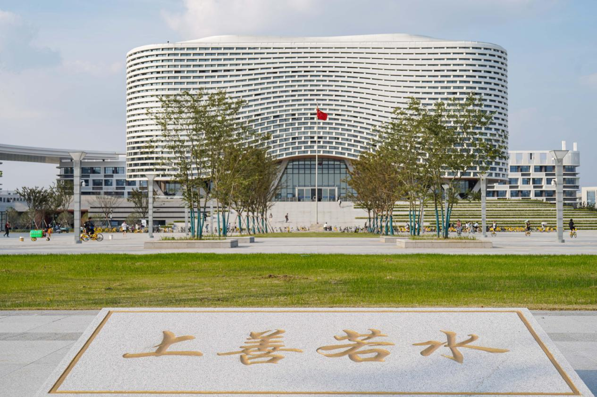
常州校区若水广场
「若水广场」四字由严恺院士亲笔题写，水文化核心地标。
为什么适合打卡严恺院士的题字就在广场中央，是常州校区最有纪念意义的一处合影点。
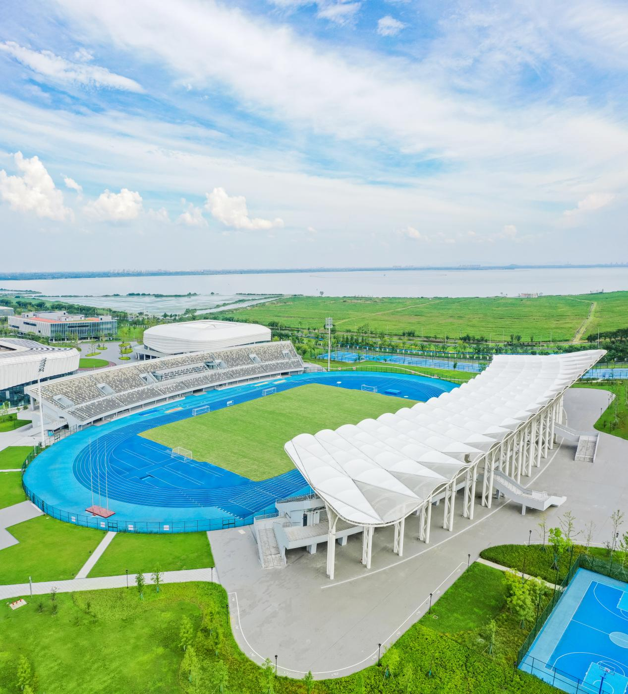
常州校区东体育场
蓝色跑道与膜结构看台，最有活力的打卡背景。
为什么适合打卡运动主题人像的绝佳背景；开阔的跑道适合拍跳跃与远景，色彩也最跳。
实景照片取自河海大学官网公开资料，仅用于校园文化展示。
104这些课，读懂一条河
从水循环的原理，到大坝与港口的工程实践——下列课程为方向示意，用于展示课程卡片与信息的排布。
水文学原理
水利学科的“母语课”。从降水形成、蒸发散失、下渗产流，到坡面汇流与河道演进，系统讲解水循环各环节的数量关系。课程配合典型流域的实测资料分析，让学生学会用径流、洪水、枯水等专业语言描述一条河，为后续水文预报、水资源评价奠定理论基础。
水工建筑物
从重力坝、拱坝到船闸、溢洪道，课程逐一拆解水工结构的受力逻辑与构造细节。学生不仅要读懂图纸、算清荷载，还要理解一座坝如何与地形、地质、生态共处。结合三峡、溪洛渡等巨型工程案例，把抽象的力学公式转化为可落地的工程判断。
河流动力学
泥沙从何而来？河床为何冲淤？航道怎样保持稳定？课程从水流挟沙力、河床形态阻力、弯道环流讲起，揭示河流自我塑造的规律。内容直接关系到长江口深水航道治理、黄河泥沙调控、河湖生态修复等国家重大工程的科学决策。
水资源规划与管理
以水循环为底盘、供需平衡为主线，讲授流域与区域水资源配置、多目标调度、节水潜力评估与决策支持系统。学生将接触真实的水资源公报数据，学习在防洪、供水、生态、发电之间寻找最优解，理解“以水定城、以水定地、以水定人”的规划理念。
海岸动力学
波浪传播、潮汐涨落、泥沙沿岸输移、海平面上升——这门课把海洋动力搬进课堂。内容覆盖港口选址、海岸防护、离岸工程、滩涂围垦等场景，结合物理模型试验与数值模拟，让学生理解海岸与近海工程如何在复杂动力环境中寻求安全与经济平衡。
智慧水利导论
数据、算法与场景融合是核心。课程介绍物联网感知、水动力数值模拟、数字孪生流域、智能调度与洪水预报等前沿方向，并通过 Python/MATLAB 小项目让学生动手处理真实水文数据。它是传统水利走向“新工科”与“水利+AI”的入口。
一批河海人，半部治水图
把治水校友的足迹立在中国地图上——每一根光柱代表一个省级行政区，柱越高，该地校友规模相对越大。悬停任意柱体可查看示意数据；以下内容为演示版式，非官方统计。
气泡大小与数字均为演示示意，非官方统计。
把想说的话，留在河边
无论你是在校生、校友，还是第一次了解河海的人，都可以在这里留下一句话。留言仅保存在你本机浏览器中，用于演示，不会上传服务器。
已内置若干示例留言，可自行添加。
128测一测，你和河海的契合度
三道题，看看哪一个方向更像你。测试结果仅为互动演示，不构成任何报考建议。
你的方向是…
方向关于本刊
这是一份以「水」为线索的沉浸式数字宣传特刊原型，帮助不熟悉河海的人顺流而下，一层层发现这所百年学府的历史、学科与精神。整刊采用杂志版式，顶部按钮直达每一栏，无需长距离滚动。
本页面为演示原型（Mock），用于展示设计风格与交互思路；内容整理自公开资料，数据与配图（含视频、图片）均为 AI 生成示意，非学校官方发布。
资料来源
- 河海大学 · 学校简介https://www.hhu.edu.cn/xxjj_23318/list.htm
- 河海大学 · 大学章程https://www.hhu.edu.cn/16347/list.htm
- 河海大学 · 校训https://www.hhu.edu.cn/2021/0326/c179a220940/page.htm
- 河海大学官方网站https://www.hhu.edu.cn